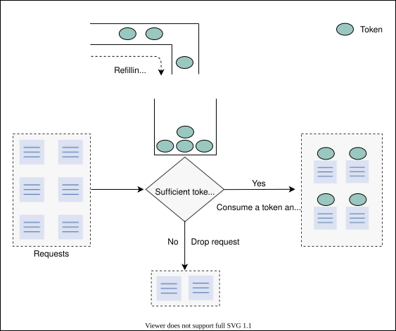
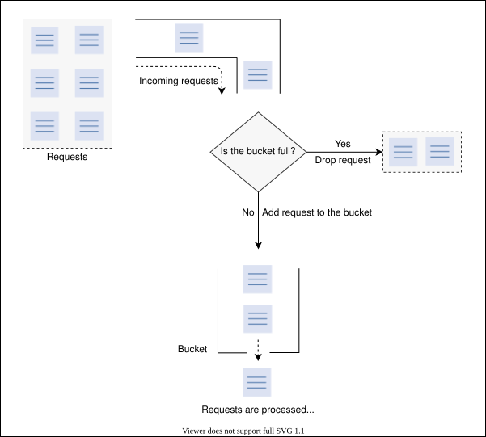
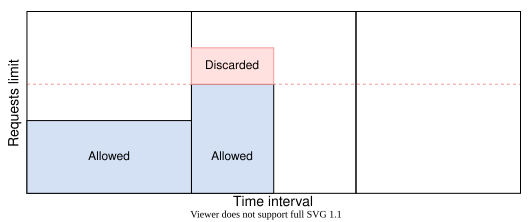
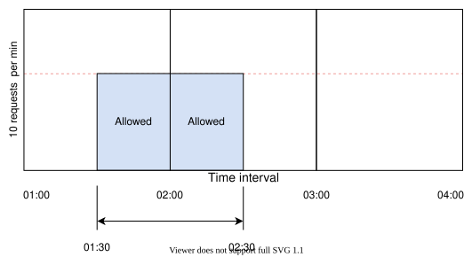
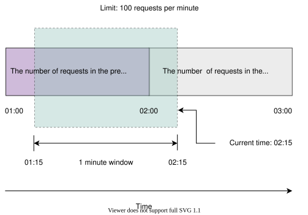

19. Rate Limiter
System Design: The Rate Limiter
System Design: The Rate Limiter
Let's understand the basic details to design a rate limiter.
We'll cover the following
What is a rate limiter?#
A rate limiter, as the name suggests, puts a limit on the number of requests a service fulfills. It throttles requests that cross the predefined limit. For example, a client using a particular service’s API that is configured to allow 500 requests per minute would block further incoming requests for the client if the number of requests the client makes exceeds that limit.
Why do we need a rate limiter?#
A rate limiter is generally used as a defensive layer for services to avoid their excessive usage, whether intended or unintended. It also protects services against abusive behaviors that target the application layer, such as denial-of-service (DOS) attacks and brute-force password attempts.
Below, we have a list of scenarios where rate limiters can be used to make the service more reliable.
-
Preventing resource starvation: Some denial of service incidents are caused by errors in software or configurations in the system, which causes resource starvation. Such attacks are referred to as friendly-fire denial of service. One of the common use cases of rate limiters is to avoid resource starvation caused by such denial of service attacks, whether intentional or unintentional.
-
Managing policies and quotas: There is also a need for rate limiters to provide a fair and reasonable use of resources’ capacity when they are shared among many users. The policy refers to applying limits on the time duration or quantity allocated (quota).
-
Controlling data flow: Rate limiters could also be used in systems where there is a need to process a large amount of data. Rate limiters control the flow of data to distribute the work evenly among different machines, avoiding the burden on a single machine.
-
Avoiding excess costs: Rate limiting can also be used to control the cost of operations. For example, organizations can use rate limiting to prevent experiments from running out of control and avoid large bills. Some cloud service providers also use this concept by providing freemium services to certain limits, which can be increased on request by charging from users.
How will we design a rate limiter?#
In the following lessons, we will learn about the following:
- Requirements: This is where we discuss the functional and non-functional requirements of the rate limiter. We also describe the types of throttling and locations where a rate limiter can be placed to perform its functions efficiently.
- High-level design: In this section, we look at the high-level design to provide an overview of a rate limiter.
- Detailed design: In this section, we discuss the detailed design of a rate limiter and explain various building blocks involved in the detailed design.
- Rate limiter algorithms: In this lesson, we explain different algorithms that play a vital role in the operations of a rate limiter.
- Quiz: To assess your understanding of rate limiters, we’ve provided a quiz at the end of this chapter.
In the next lesson, let’s start by understanding the requirements and design of a rate limiter.
Requirements of a Rate Limiter’s Design
Requirements of a Rate Limiter’s Design
Understand the requirements and important concepts of a rate limiter.
Requirements#
Our focus in this lesson is to design a rate limiter with the following functional and non-functional requirements.
Functional requirements#
- To limit the number of requests a client can send to an API within a time window.
- To make the limit of requests per window configurable.
- To make sure that the client gets a message (error or notification) whenever the defined threshold is crossed within a single server or combination of servers.
Non-functional requirements#
- Availability: Essentially, the rate limiter protects our system. Therefore, it should be highly available.
- Low latency: Because all API requests pass through the rate limiter, it should work with a minimum latency without affecting the user experience.
- Scalability: Our design should be highly scalable. It should be able to rate limit an increasing number of clients’ requests over time.
Types of throttling#
A rate limiter can perform three types of throttling.
- Hard throttling: This type of throttling puts a hard limit on the number of API requests. So, whenever a request exceeds the limit, it is discarded.
- Soft throttling: Under soft throttling, the number of requests can exceed the predefined limit by a certain percentage. For example, if our system has a predefined limit of 500 messages per minute with a 5% exceed in the limit, we can let the client send 525 requests per minute.
- Elastic or dynamic throttling: In this throttling, the number of requests can cross the predefined limit if the system has excess resources available. However, there is no specific percentage defined for the upper limit. For example, if our system allows 500 requests per minute, it can let the user send more than 500 requests when free resources are available.
Where to place the rate limiter#
There are three different ways to place the rate limiter.
-
On the client side: It is easy to place the rate limiter on the client side. However, this strategy is not safe because it can easily be tampered with by malicious activity. Moreover, the configuration on the client side is also difficult to apply in this approach.
-
On the server side: As shown in the following figure, the rate limiter is placed on the server-side. In this approach, a server receives a request that is passed through the rate limiter that resides on the server.

- As middleware: In this strategy, the rate limiter acts as middleware, throttling requests to API servers as shown in the following figure.
Placing a rate limiter is dependent on a number of factors and is a subjective decision, based on the organization’s technology stack, engineering resources, priorities, plan, goals, and so on.
Note: Many modern services use APIs to provide their functionality to the clients. API endpoints can be a good vantage point to rate limit the incoming client traffic because all traffic passes through them.
Two models for implementing a rate limiter#
One rate limiter might not be enough to handle enormous traffic to support millions of users. Therefore, a better option is to use multiple rate limiters as a cluster of independent nodes. Since there will be numerous rate limiters with their corresponding counters (or their rate limit), there are two ways to use databases to store, retrieve, and update the counters along with the user information.
-
A rate limiter with a centralized database: In this approach, rate limiters interact with a centralized database, preferably Redis or Cassandra. The advantage of this model is that the counters are stored in centralized databases. Therefore, a client can’t exceed the predefined limit. However, there are a few drawbacks to this approach. It causes an increase in latency if an enormous number of requests hit the centralized database. Another extensive problem is the potential for race conditions in highly concurrent requests (or associated lock contention).
-
A rate limiter with a distributed database: Using an independent cluster of nodes is another approach where the rate-limiting state is in a distributed database. In this approach, each node has to track the rate limit. The problem with this approach is that a client could exceed a rate limit—at least momentarily, while the state is being collected from everyone—when sending requests to different nodes (rate-limiters). To enforce the limit, we must set up sticky sessions in the load balancer to send each consumer to exactly one node. However, this approach lacks fault tolerance and poses scaling problems when the nodes get overloaded.
Aside from the above two concepts, another problem is whether to use a global counter shared by all the incoming requests or individual counters per user. For example, the token bucket algorithm can be implemented in two ways. In the first method, all requests can share the total number of tokens in a single bucket, while in the second method, individual buckets are assigned to users. The choice of using shared or separate counters (or buckets) depends on the use case and the rate-limiting rules.
Points to Ponder
Question 1
Can a rate limiter be used as a load balancer?
1 of 2
Building blocks we will use#
The design of the rate limiter utilizes the following building blocks that we discussed in the initial chapters.
In the next lesson, we’ll focus on a high-level and detailed design of a rate limiter based on the requirements discussed in this lesson.
Design of a Rate Limiter
Design of a Rate Limiter
Learn to design rate limiters that help gauge and throttle resources being used across our system.
High-level design#
A rate limiter can be deployed as a separate service that will interact with a web server, as shown in the figure below. When a request is received, the rate limiter suggests whether the request should be forwarded to the server or not. The rate limiter consists of rules that should be followed by each incoming request. These rules define the throttling limit for each operation. Let’s go through a rate limiter rule from Lyft, which has open-sourced its rate limiting component.
In the above rate-limiting rule, the unit is set to day and the request_per_unit is set to 5. These parameters define that the system can allow five marketing messages per day.
Detailed design#
The high-level design given above does not answer the following questions:
- Where are the rules stored?
- How do we handle requests that are rate limited?
In this section, we’ll first expand the high-level architecture into several other essential components. We’ll also explain each component in detail, as shown in the following figure.

Let’s discuss each component that is present in the detailed design of a rate limiter.
Rule database: This is the database, consisting of rules defined by the service owner. Each rule specifies the number of requests allowed for a particular client per unit of time.
Rules retriever: This is a background process that periodically checks for any modifications to the rules in the database. The rule cache is updated if there are any modifications made to the existing rules.
Throttle rules cache: The cache consists of rules retrieved from the rule database. The cache serves a rate-limiter request faster than persistent storage. As a result, it increases the performance of the system. So, when the rate limiter receives a request against an ID (key), it checks the ID against the rules in the cache.
Decision-maker: This component is responsible for making decisions against the rules in the cache. This component works based on one of the rate-limiting algorithms that are discussed in the next lesson.
Client identifier builder: This component generates a unique ID for a request received from a client. This could be a remote IP address, login ID, or a combination of several other attributes, due to which a sequencer can’t be used here. This ID is considered as a key to store the user data in the key-value database. So, this key is passed to the decision-maker for further service decisions.
In case the predefined limit is crossed, APIs return an HTTP response code 429 Too Many Requests, and one of the following strategies is applied to the request:
- Drop the request and return a specific response to the client, such as “too many requests” or “service unavailable.”
- If some requests are rate limited due to a system overload, we can keep those requests in a queue to be processed later.
Request processing#
When a request is received, the client identifier builder identifies the request and forwards it to the decision-maker. The decision-maker determines the services required by request, then checks the cache against the number of requests allowed, as well as the rules provided by the service owner. If the request does not exceed the count limit, it is forwarded to the request processor, which is responsible for serving the request.
The decision-maker takes decisions based on the throttling algorithms. The throttling can be hard, soft, or elastic. Based on soft or elastic throttling, requests are allowed more than the defined limit. These requests are either served or kept in the queue and served later, upon the availability of resources. Similarly, if hard throttling is used, requests are rejected, and a response error is sent back to the client.
Point to Ponder
Question
In the event of a failure, a rate limiter is unable to perform the task of throttling. In these scenarios, should the request be accepted or rejected?
Race condition#
There is a possibility of a race condition in a situation of high concurrency request patterns. It happens when the “get-then-set” approach is followed, wherein the current counter is retrieved, incremented, and then pushed back to the database. While following this approach, some additional requests can come through that could leave the incremented counter invalid. This allows a client to send a very high rate of requests, bypassing the rate-limiting controls. To avoid this problem, the locking mechanism can be used, where one process can update the counter at a time while others wait for the lock to be released. Since this approach can cause a potential bottleneck, it significantly degrades performance and does not scale well.
Another method that could be used is the “set-then-get” approach, wherein a value is incremented in a very performant fashion, avoiding the locking approach. This approach works if there’s minimum contention. However, one might use other approaches where the allowed quota is divided into multiple places and divide the load on them, or use sharded counters to scale an approach.
Note: We can use sharded counters for rate-limiting under the highly concurrent nature of traffic. By increasing the number of shards, we reduce write contention. Since we have to collect counters from all shards, our reading may slow down.
A rate limiter should not be on the client’s critical path#
Let’s assume a real-time scenario where millions of requests hit the front-end servers. Each request will retrieve, update, and push back the count to the respective cache. After all these operations, the request is sent forward to be served. This approach could cause latency if there is a high number of requests. To avoid numerous computations in the client’s critical path, we should divide the work into offline and online parts.
Initially, when a client’s request is received, the system will just check the respective count. If it is less than the maximum limit, the system will allow the client’s request. In the second phase, the system updates the respective count and cache offline. For a few requests, this won’t have any effect on the performance, but for millions of requests, this approach increases performance significantly.
Let’s understand the online and offline updates approach with an example. In the following set of illustrations, when a request is received, its ID is forwarded to the rate limiter that will check the condition if(request(ID).Count <= Max. Limit by retrieving data from the cache. For simplicity, assume that one of the requests ID is 101, that is, request(ID) = 101. The following table shows the number of requests made by each client and the maximum number of requests per unit time that a client can make.
Request ID | Maximum Limit | Count |
100 | 5 | 4 |
101 | 5 | 3 |
If the condition is true, the rate limiter will first respond back to the front-end server with an Allowed signal. The corresponding count and other relevant information are updated offline in the next steps. The rate limiter writes back the updated data in the cache. Following this approach reduces latency and avoids the contention that incoming requests could have caused.
Note: We’ve seen a form of rate limiting in TCP network protocol, where the recipient can throttle the sender by advertising the size of the window (the outstanding data a recipient is willing to receive). The sender sends the minimum value of either the congestion window or the advertised window. Many network traffic shapers use similar mechanisms to provide preferential treatment to different network flows.
Conclusion#
In this lesson, we discussed the design of a rate limiter in distributed systems. Let’s analyze the non-functional requirements we promised in the previous lesson.
-
Availability: If a rate limiter fails, multiple rate limiters will be available to handle the incoming requests. So, a single point of failure is eliminated.
-
Low latency: Our system retrieves and updates the data of each incoming request from the cache instead of the database. First, the incoming requests are forwarded if they do not exceed the rate limit, and then the cache and database are updated.
-
Scalability: The number of rate limiters can be increased or decreased based on the number of incoming requests within the defined limit.
Now, our system provides high availability, low latency, and scalability in light of the above discussion.
Rate Limiter Algorithms
Rate Limiter Algorithms
Understand the working of various rate limiter algorithms.
Algorithms for rate limiting#
The task of a rate limiter is directed by highly efficient algorithms, each of which has distinct advantages and disadvantages. However, there is always a choice to choose an algorithm or combination of algorithms depending on what we need at a given time. While different algorithms are used in addition to those below, we’ll take a look at the following popular algorithms.
- Token bucket
- Leaking bucket
- Fixed window counter
- Sliding window log
- Sliding window counter
Token bucket algorithm#
This algorithm uses the analogy of a bucket with a predefined capacity of tokens. The bucket is periodically filled with tokens at a constant rate. A token can be considered as a packet of some specific size. Hence, the algorithm checks for the token in the bucket each time we receive a request. There should be at least one token to process the request further.
The flow of the token bucket algorithm is as follows:
Assume that we have a predefined rate limit of R and the total capacity of the bucket is C.
- The algorithm adds a new token to the bucket after every R1 seconds.
- The algorithm discards the new incoming tokens when the number of tokens in the bucket is equal to the total capacity C of the bucket.
- If there are N incoming requests and the bucket has at least N tokens, the tokens are consumed, and requests are forwarded for further processing.
- If there are N incoming requests and the bucket has a lower number of tokens, then the number of requests accepted equals the number of available tokens in the bucket.
The following illustration represents the working of the token bucket algorithm.

The following illustration demonstrates how token consumption and rate-limiting logic work. In this example, the capacity of the bucket is three, and it is refilled at a rate of three tokens per minute.
Essential parameters#
We require the following essential parameters to implement the token bucket algorithm:
- Bucket capacity (C): The maximum number of tokens that can reside in the bucket.
- Rate limit (R): The number of requests we want to limit per unit time.
- Refill rate (R1): The number of tokens put into the bucket per unit time.
- Requests count (N): This parameter tracks the number of incoming requests and compares them with the bucket’s capacity.
Advantages#
- This algorithm can cause a burst of traffic as long as there are enough tokens in the bucket.
- It is space efficient. The memory needed for the algorithm is nominal due to limited states.
Disadvantages#
- From the implementation perspective, a lock might require taking a token from the bucket that can increase the request’s processing delay if contention on the lock increases.
- Choosing an optimal value for the essential parameters is a difficult task.
The leaking bucket algorithm#
The leaking bucket algorithm is a variant of the token bucket algorithm with slight modifications. Instead of using tokens, the leaking bucket algorithm uses a bucket to contain incoming requests and processes them at a constant outgoing rate. This algorithm uses the analogy of a water bucket leaking at a constant rate. Similarly, in this algorithm, the requests arrive at a variable rate. The algorithm process these requests at a constant rate in a first-in-first-out (FIFO) order.
Let’s look at how the leaking bucket algorithm works in the illustration below:

Essential parameters#
The leaking bucket algorithm requires the following parameters.
- Bucket capacity (C): This determines the maximum capacity of the bucket. The algorithm will discard the incoming requests when the bucket reached its maximum limit of C.
- Inflow rate (Rin): This parameter shows the inflow rate of requests. This is a varying quantity that depends on the application and nature of requests. We use this parameter to find the initial capacity of the bucket.
- Outflow rate (Rout): This determines the number of requests processed per unit time.
Advantages#
- Due to a constant outflow rate (Rout), it avoids the burst of requests, unlike the token bucket algorithm.
- This algorithm is also space efficient since it requires just three states: inflow rate (Rin), outflow rate (Rout), and bucket capacity (C).
- Since requests are processed at a fixed rate, it is suitable for applications with a stable outflow rate.
Disadvantages#
- A burst of requests can fill the bucket, and if not processed in the specified time, recent requests can take a hit.
- Determining an optimal bucket size and outflow rate is a challenge.
Fixed window counter algorithm#
This algorithm divides the time into fixed intervals called windows and assigns a counter to each window. When a specific window receives a request, the counter is incremented by one. Once the counter reaches its limit, new requests are discarded in that window.
As shown in the below figure, a dotted line represents the limit in each window. If the counter is lower than the limit, forward the request; otherwise, discard the request.

There is a significant problem with this algorithm. A burst of traffic greater than the allowed requests can occur at the edges of the window. In the below figure, the system allows a maximum of ten requests per minute. However, the number of requests in the one-minute window from 01:30 to 02:30 is 20, which is greater than the allowed number of requests.

Essential parameters#
The fixed window counter algorithm requires the following parameters:
- Window size (W): It represents the size of the time window. It can be a minute, an hour, or any other suitable time slice.
- Rate limit (R): It shows the number of requests allowed per time window.
- Requests count (N): This parameter shows the number of incoming requests per window. The incoming requests are allowed if N is less than or equal to R.
Advantages#
- It is also space efficient due to constraints on the rate of requests.
- As compared to token bucket-style algorithms (that discard the new requests if there aren’t enough tokens), this algorithm services the new requests.
Disadvantages#
- A consistent burst of traffic (twice the number of allowed requests per window) at the window edges could cause a potential decrease in performance.
Sliding window log algorithm#
The sliding window log algorithm keeps track of each incoming request. When a request arrives, its arrival time is stored in a hash map, usually known as the log. The logs are sorted based on the time stamps of incoming requests. The requests are allowed depending on the size of the log and arrival time.
The main advantage of this algorithm is that it doesn’t suffer from the edge conditions, as compared to the fixed window counter algorithm.
Let’s understand how the sliding window log algorithm works in the illustration below. Assume that we have a maximum rate limit of two requests in a minute.
Essential parameters#
The following parameters are required to implement the sliding window log algorithm:
- Log size (L): This parameter is similar to the rate limit (R) as it determines the number of requests allowed in a specific time frame.
- Arrival time (T): This parameter tracks incoming requests’ time stamps and determines their count.
- Time range (Tr): This parameter determines the time frame. The time stamps of the old requests are deleted if they do not fall in this range. The start time of the window is defined based on the first incoming request and expires after one minute. Similarly, when another request after the expiry time arrives the window ranges are updated accordingly.
Advantages#
- The algorithm doesn’t suffer from the boundary conditions of fixed windows.
Disadvantages#
- It consumes extra memory for storing additional information, the time stamps of incoming requests. It keeps the time stamps to provide a dynamic window, even if the request is rejected.
Sliding window counter algorithm#
Unlike the previously fixed window algorithm, the sliding window counter algorithm doesn’t limit the requests based on fixed time units. This algorithm takes into account both the fixed window counter and sliding window log algorithms to make the flow of requests more smooth. Let’s look at the flow of the algorithm in the below figure.

In the above figure, we’ve 88 requests in the previous window while 12 in the current window. We’ve set the rate limit to 100 requests per minute. Further, the rolling window overlaps 15 seconds with the current window. Now assume that a new request arrives at 02:15. We’ll decide which request to accept or reject using the mathematical formulation:
Rate=Rp×time frametime frame−overlap time+Rc
Here, Rp is the number of requests in the previous window, which is 88. Rc is the number of requests in the current window, which is 12. The time frame is 60 seconds in our case, and overlap time is 15 seconds.
Rate=88×6060−15+12
Rate=78<100
As 78 is less than 100, so the incoming request is allowed.
Essential parameters#
This algorithm is relatively more complex than the other algorithms described above. It requires the following parameters:
- Rate limit (R) It determines the number of maximum requests allowed per window.
- Size of the window (W): This parameter represents the size of a time window that can be a minute, an hour, or any time slice.
- The number of requests in the previous window (Rp): It determines the total number of requests that have been received in the previous time window.
- The number of requests in the current window (Rc): It represents the number of requests received in the current window.
- Overlap time (Ot): This parameter shows the overlapping time of the rolling window with the current window.
Advantages#
- The algorithm is also space efficient due to limited states: the number of requests in the current window, the number of requests in the previous window, the overlapping percentage, and so on.
- It smooths out the bursts of requests and processes them with an approximate average rate based on the previous window.
Disadvantages#
- This algorithm assumes that the number of requests in the previous window is evenly distributed, which may not always be possible.
A comparison of rate-limiting algorithms#
The two main factors that are common among all the rate-limiting algorithms are:
-
Memory: This feature refers to the number of states an algorithm requires to maintain for a normal operation. For example, if one algorithm requires fewer variables (states) than the other, it is more space efficient.
-
Burst: This refers to an increase of traffic in a unit time exceeding the defined limit.
The following table shows the space efficiency and burst of traffic for all algorithms that have been described in this lesson.
Algorithm | Space efficient | Allows burst? |
Token bucket | Yes | Yes, it allows a burst of traffic within defined limit. |
Leaking bucket | Yes | No |
Fixed window counter | Yes | Yes, it allows bursts at the edge of the time window and can exceed the defined limit. |
Sliding window log | No, maintaining the log requires extra storage. | No |
Sliding window counter | Yes, but it requires relatively more space than other space efficient algorithms. | Smooths out the burst |
Conclusion#
In this lesson, we explored various popular rate-limiting algorithms. We also shed light on the advantages and disadvantages of these algorithms. Each of these algorithms can be deployed based on the user choice and the type of use case.
Quiz on the Rate Limiter’s Design
Quiz on the Rate Limiter’s Design
Test your knowledge of concepts related to rate-limiting.
Which of the following algorithms is used to smooth spikes in incoming requests at the edge of the window?
A)
Token bucket algorithm
B)
Sliding window log algorithm
C)
Fixed window counter algorithm
D)
None of the above